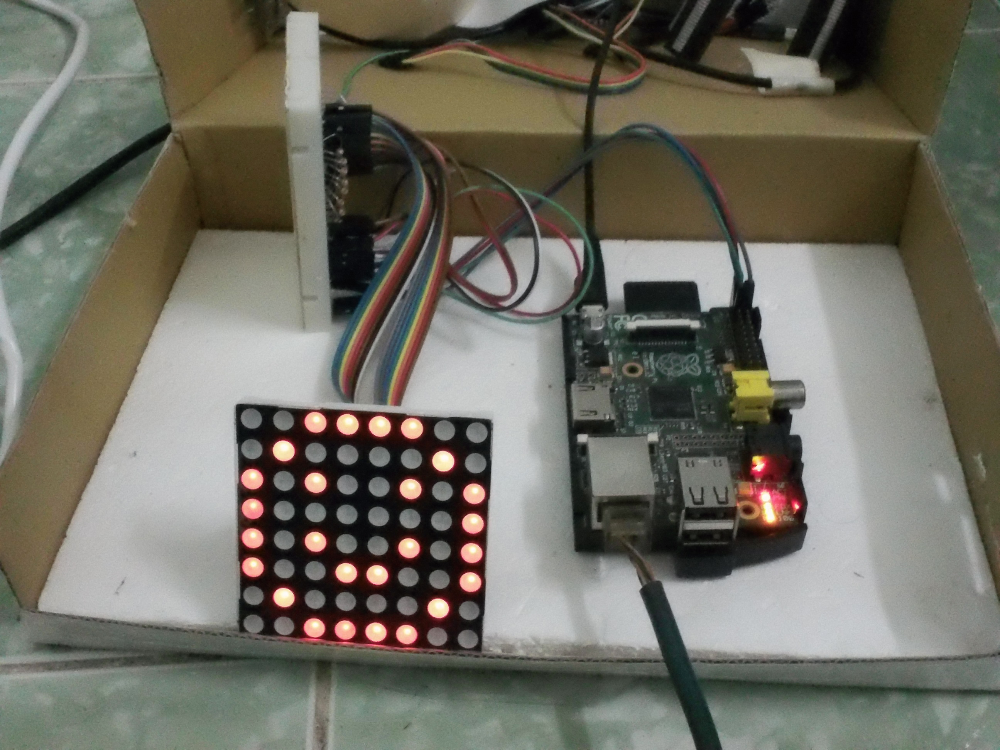

Created Friday 27 June 2014
Thư viện giao tiếp SPI qua Python:
- Adafruit: lệnh triển khai SPI bằng phần mềm, trong file truy cập MCP3008
- python-spidev: là wrapper cho hàm truy cập SPI của Linux viết bằng C -> tốc độ sẽ nhanh hơn
Dùng matrix 8x8 và IC mở rộng port MCP23017
https://www.modmypi.com/pi-matrix (con này hình như giao tiếp I2C)
hoặc
http://www.raspians.com/pi-matrix-8x8-led/
Dùng Max 7219
http://raspi.tv/2013/8-x-8-led-array-driven-by-max7219-on-the-raspberry-pi-via-python
Mua:
- IC Max 7219
hoặc
- Max 7219 + bản mạch LED 7 đoạn
http://banlinhkien.vn/goods-2831-module-led-7-max7219.html
Hoặc: hỏi Dương lấy IC MCP23017 (done) & mua LED 8x8 RGB
http://banlinhkien.vn/goods-2922-led-matrix-rgb-8x8-60mm-2088rgb-5.html
Linh kiện
- LED matrix 8x8
- MCP 23017
Nội dung
Dẫn nhập (1 trang)
- các linh kiện cần thiết
- ý nghĩa của bài học này, có thể phát triển ra những ứng dụng nào
Bạn đọc đã biết cấu tạo và cách lập trình điều khiển đèn LED ma trận bằng kỹ thuật quét LED. Sử dụng các chân GPIO để điều khiển trực tiếp đèn LED ma trận, ta hiểu nguyên lý cơ sở để kiểm soát các linh kiện này. Tuy nhiên, việc thực hiện nguyên lý cơ sở đó đòi hỏi bộ xử lý phải dành nhiều thời gian để thực hiện vòng lặp quét LED, làm giảm nhiều thời gian để bộ xử lý thực hiện các công việc khác. Thông thường trong các ứng dụng điện tử, phần việc hiển thị chỉ là một tác vụ nhỏ, còn phần lớn năng lực của bộ xử lý là dành cho các tính toán và điều khiển thiết bị khác, do vậy người ta rất hạn chế điều khiển trực tiếp thiết bị hiển thị như LED ma trận.
Giải pháp để bộ xử lý giảm được thời gian dành cho việc hiển thị là sử dụng các IC điều khiển riêng biệt đối với tác vụ đó, ví dụ có các IC chuyên dùng để điều khiển LED ma trận. Các IC như vậy được thiết kế để tự thực hiện kỹ thuật quét LED, chúng sẽ giao tiếp với bộ xử lý để nhận giá trị mà bộ xử lý muốn hiển thị lên LED ma trận, chỉ cần bộ xử lý gửi dữ liệu một lần rồi sau đó IC phụ trách duy trì hình ảnh trên LED ma trận. Để làm việc với các IC đó, bộ xử lý cần thực hiện được tác vụ truyền - nhận dữ liệu với IC, vấn đề điểu khiển đèn LED ma trận chỉ còn là vấn đề kết nối và giao tiếp được với IC chuyên dụng. Để thực hiện việc truyền nhận dữ liệu, cả bộ vi xử lý lẫn IC cần được kết nối các chân và lập trình giao tiếp theo một chuẩn giao tiếp chung. Có khá nhiều chuẩn giao tiếp thường dùng trong lĩnh vực vi điều khiển, như: chuẩn nối tiếp RS-232, SPI, I2C, USB, các chuẩn hay dùng trong thiết bị công nghiệp như CAN, LIN, RS-485. Trong chương này, chúng ta tìm hiểu về chuẩn giao tiếp SPI, là một chuẩn giao tiếp ít phức tạp và có khả năng truyền dữ liệu ở tốc độ cao, do vậy thường được triển khai trong các IC chuyên dụng.
Chương này sẽ giới thiệu về IC (tên IC) chuyên dùng để điều khiển đèn LED ma trận, cách mắc mạch điện tử và lập trình RPI để giao tiếp với IC qua chuẩn giao tiếp SPI nhằm kiểm soát LED ma trận.
Kết nối mạch điện tử (1 trang - hình ảnh)
- coi như khi có sơ đồ nối dây là người ta làm theo được, không cần hướng dẫn từng bước

Chuẩn bị phần mềm (1 trang)
- liệt kê các bước bằng text
- chụp hình màn hình khi chọn menu để vào môi trường nhập lệnh (console)
Code mẫu (1 trang)
- nhập code và xem kết quả:
- nhập các lệnh điều khiển
Giải thích các lệnh (3 trang )
- thêm một phần giải thích việc nhập code kiểu interactive (nhập, gõ enter, thấy kết quả ngay, không có biên dịch hay phải nạp vào chip)
- (dự kiến khối lệnh ở mỗi bài trong vòng 20 - 40 dòng)
Bài thực hành thêm (1 trang)
{kind=link}
{kind=link}
{kind=link}